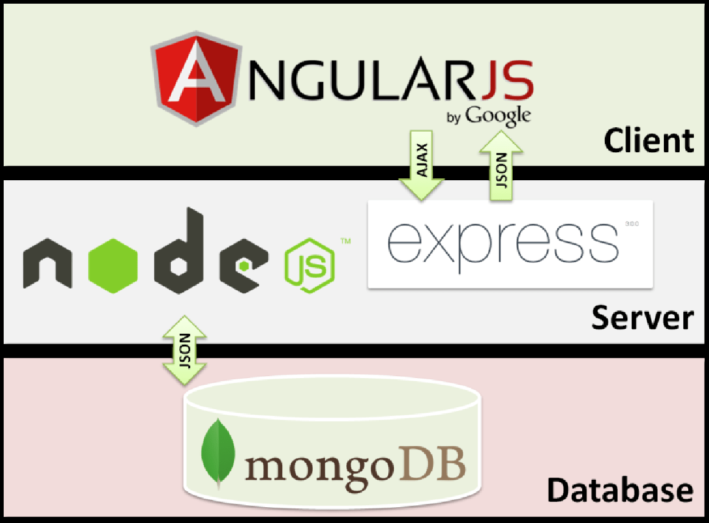
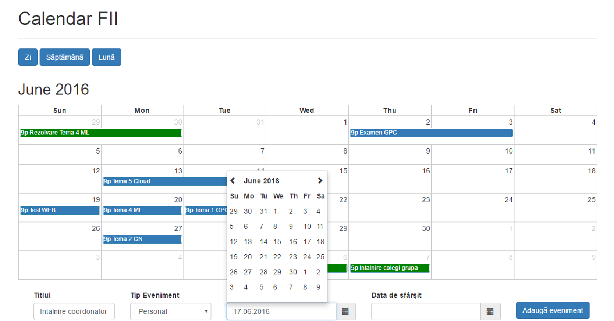

Data publicării: 03.04.2017
Autor articol: Corina Forascu
Studenţii reprezintă una dintre cele mai valoaroase resurse ale unei facultăţi. Comunicarea dintre aceştia şi profesori reprezintă un factor cheie în buna desfășurare a cursurilor, seminariilor şi laboratoarelor, dar şi în rezultatele finale şi pentru renumele general al unei Facultăţi şi chiar al Universității în general.
Cele mai mari universități din lume prezintă interes pentru eficientizarea comunicarii şi gestionarea resurselor prin digitalizarea mediului academic. Astfel, majoritatea universităților şi-au dezvoltat platforme destinate atât studenților, cât şi personalului academic, care răspund nevoilor acestora prin integrarea resurselor necesare unei bune desfășurări a activităților educaționale. Aceste platforme urmăresc să ofere o soluție completă pentru asigurarea unui acces facil la orar, note, noutăți şi alte elemente de interes pentru studenţii şi profesorii din mediul universitar.
În urma unor studii de piață (Grove, 2015), compania Deloitte a ajuns la concluzia că departamentele IT ale universităților necesită o revizuire. În momentul de față există o reticență în utilizarea tehnologiei în integrarea și îmbunătățirea sistemului administrativ al facultăților și în sprijinirea studenților. Aceste arii continuă să se bazeze pe mai multe platforme IT pentru diferite servicii. Datorită creșterii așteptărilor şi cerintelor studenților, sistemele IT integrate şi simplificate reprezintă o solutie viabilă în asigurarea unei comunicări eficiente şi reducerea costurilor administrative.
În momentul de față, Facultatea de Informatică Iaşi nu dispune de o platformă care să integreze aplicațiile existente. Apare astfel necesitatea găsirii unei soluții a acestei probleme – o idee sau un punct de start prin construirea unui prototip uşor de extins, pentru gestionarea orarului şi a temelor.
Una dintre problemele identificate la majoritatea studenților, cu impact în multe dintre activitățile lor, este lipsa de organizare eficientă a timpului şi a resurselor. Din acest motiv apar situații când aceștia întârzie la cursuri, nu termină temele la timp sau chiar, impardonabil, uită de examene.
Apare deci firească inițiativa de a realiza o aplicaţie web pentru gestionarea resurselor şi facilitarea comunicarii dintre studenţi şi personalul academic.
Platforma uniApp are ca obiectiv principal integrarea unora dintre resursele deja existente în Facultatea de Informatică prin facilitarea accesului la e-mail (Aplicaţia Webmail), note (Aplicaţia eSIMS), orar, lista de profesori şi Studenți şi Asociatia Studenților Informaticieni Ieșeni (ASII).
Aplicaţia realizată reprezintă un prototip pentru crearea unei platforme integrate. Acest prototip a fost creat folosind tehnologii moderne pentru dezvoltarea aplicaţiilor web, precum şi pentru gestionarea bazei de date.
Prin intermediul acestei platforme, atât studenţii cât şi profesorii beneficiază de un acces facil la diferite resurse precum note, e-mail, lista personal academic, site-ul asociaţiei de studenţi, etc. În plus, uniApp oferă un calendar personalizat conectat cu o aplicaţie de tip TODO-list pentru o vizualizare mai usoara a evenimentelor şi al activitatilor din cadrul Facultății. Profesorii pot adăuga teme sau alte evenimente de interes pentru studenţii dintr-un anumit an/ grupa, iar aceştia le pot vizualiza direct în calendarul lor personalizat. Aplicaţia TODO-list oferă utilizatorilor posibilitatea de a-şi organiza şi monitoriza activitaţile personale.
Pentru a crea această platformă, în cadrul unei lucrări de licență coordonate de autoare, a fost realizată o aplicaţie web implementată cu ajutorul MEAN Stack. Acest termen se referă la o colecție de tehnologii bazate pe JavaScript (online), folosite pentru dezvoltarea de aplicaţii web. MEAN reprezintă de fapt un acronim pentru MongoDB (online), Express (online), AngularJS (online) şi Node.js (Oliver, 2015). De la partea de client, până la server şi baza de date, MEAN foloseşte un singur limbaj de programare – JavaScript.
Pentru realizarea aplicației a fost propus un nou mod de organizare şi stocare a datelor, folosind o bază de date bazată pe documente. Vizualizarea datelor despre studenţi, profesori şi evenimentele stocate în calendarul personal de gestionare se realizează prin implementarea unei baze de date NoSQL.
Bazele de date au un impact decisiv asupra modului în care sunt organizate şi utilizate datele în cadrul instituţiilor şi serviciilor. Pentru o bună funcţionare a acestora este necesară o organizare şi stocare foarte bună a datelor. Majoritatea sistemelor de baze de date sunt, în momentul de faţă, relaţionale.
Baza de date pentru o facultate precum Facultatea de Informatică din Iaşi, poate creşte foarte mult în timp, iar datele pot deveni foarte conectate. Astfel apare necesitatea folosirii unei tehnologii moderne, performante, pentru a stoca aceste date. Aplicaţia de faţă își propune să folosească o astfel de tehnologie şi anume MongoDB, care este o bază de date bazată pe documente.
Utilizarea unei astfel de baze de date este de dorit în cazul aplicației propuse, din cauza numărului mare de date care trebuie să fie gestionate. Pentru interogarea bazei de date, în situaţia folosirii unei baze de date relaţionale, ar fi necesare multe join-uri suficient de complexe. Folosind acest tip de bază de date, nu mai avem nevoie de aceste join-uri, ci doar de o parcurgere a relaţiilor folosind referinte între documente. Un alt argument în favoarea bazelor de date bazate pe documente este modul în care sunt legate datele între ele, pe bază de relaţii, ceea ce face baza de date foarte uşor de urmărit.
MongoDB (MongoDB Tutorial) este o bază de date modernă şi eficientă folosită pentru stocarea informațiilor despre profesori, studenţi şi evenimentele înregistrate în calendarul personalizat (cursuri, laboratoare, teme, examene, activități personale). MongoDB este un model de bază de date NoSQL open-source orientată pe documente. Pentru a crea o aplicaţie plăcută utilizatorului, uşor de înțeles şi folosit, s-a utilizat Angular în implementarea părții de front-end. Pentru partea de server, s-a folosit Node.js care la rândul său foloseşte Express. Cu Express a fost implementat un API pentru a comunica cu baza de date.
În Figura 1 este prezentată o diagramă care arată organizarea celor patru tehnologii pentru implementarea unei aplicaţii şi modul de comunicare între ele.

Pentru implementarea aplicației uniApp s-a utilizat ca mediu de dezvoltare MEAN Stack bazat în totalitate pe JavaScript, utilizând astfel MongoDB pentru baza de date, Express ca framework pentru Node, AngularJS pentru partea de front-end şi Node.js pentru partea de server.
De cele mai multe ori, scopul unei aplicaţii web este de a oferi utilizatorilor un mijloc de vizualizare a unor informații stocate într-o bază de date, pe care aceştia pot avea sau nu posibilitatea de a le modifica, iar sistemul trebuie să fie capabil de a persista acele schimbări în baza de date.
Pentru a crea o astfel de aplicaţie, care să facă legătura între datele din baza de date şi interfaţă, am utilizat un șablon arhitectural similar celui de tip Model-View-Controller (MVC) (Leff and Rayfield, 2001), dar înlocuind partea de Model cu un strat de servicii pentru accesarea datelor şi regulile logice ale aplicației (Business Logic). Scopul utilizării acestui şablon a fost pentru a modulariza întreaga aplicaţie, astfel încât să putem modifica unele părţi individual, fără a le afecta pe celelalte. Acest şablon separă modelarea domeniului, prezentarea (interfaţa) şi acţiunile bazate pe acţiunile utilizatorului sau pe datele introduse de el, în trei clase separate.
Modelul gestionează comportamentul şi datele domeniului, răspunde solicitărilor de informaţii cu privire la starea să şi răspunde instrucţiunilor care vizează schimbarea stării săle, de obicei venite de la Controller. View-ul gestionează afişarea informaţiilor. Controllerul interpretează acţiunile făcute de utilizator prin mouse şi tastatură, informând modelul şi/sau View-ul să își schimbe starea corespunzător.
Pentru a securiza accesul la fişierele Angular de client, am lasat paginile de autentificare şi înregistrare în afara aplicației Angular, aşadar toate fişierele Angular de front-end precum cele JavaScript, CSS sau imagini sunt accesibile doar utilizatorilor autentificaţi.
Pentru o mai bună selecție a trăsăturilor și funcționalităților aplicației uniApp, au fist studiate alte sisteme similare – My Study Life (http://www.mystudylife.com/), WebStudent (http://www.webstudent.ase.ro/login1.aspx?ReturnUrl=%2f) și WOLF (http://wolf.wlv.ac.uk/).
My Study Life este o platformă destinată atât studenților cât şi profesorilor, dezvoltată pentru o mai bună și eficientă organizare a cursurilor, laboratoarelor şi examenelor. Pe lângă un calendar personalizat pentru activitățile fiecărui student, platforma oferă şi o aplicaţie de tip TODO-list, notificări înainte de începerea evenimentelor şi sincronizarea datelor pe toate dispozitivele folosite.
După înregistrarea pe platformă, studentul poate să își acceseze contul. În acest cont se găsesc mai multe pagini:
- Dashboard – oferă o privire de ansamblu asupra activităților
- Activități – aplicație de tip TODO list pentru monitorizarea activităților desfășurate
- Examene – planificarea examenelor
- Agenda – planificarea tuturor activităților şi vizualizare pe categorii
- Căutare – pentru a găsi mai uşor informații despre ore, examene, etc.
Unul dintre dezavatanjale acestei platforme este faptul că nu facilitează comunicarea dintre studenţi şi profesori. Fiecare utilizator este nevoit să își adauge singur evenimentele, acestea nesincronizându-se cu conturile altor utilizatori. De exemplu, dacă un profesor adaugă o nouă temă pentru stundenții din anul I, aceştia nu o vor putea vizualiza în calendarul lor decât dacă o adaugă şi ei. uniApp va rezolva și această problemă.
Platforma folosită de Academia de Studii Economice București este construită folosind serviciile oferite de o platformă externă şi anume WebStudent. Această companie oferă consultanță şi suport în implementare pentru a construi împreună cu clienții o platformă personalizată nevoilor academice.
Această platformă este adresată studenților şi oferă acces la orar, programare examene, note, taxe, restante şi optionale său anunţuri generale.
- Pagina de autentificare
- Pagina principală – studentul poate vizualiza şi reactualiza datele personale
- Orar – studentul poate vizualiza orarul fiecărui semestru
- Note – studentul poate vizualiza notele pe discipline de studiu
În comparație cu această platformă, uniApp pune accentul şi pe interacţiunea cu utilizatorul, abordând un design simplu, intuitiv şi modern.
În 1995, Universitatea Wolverhampton a fost una dintre primele universități din UK care a introdus o platformă web care să digitalizeze accesul la resursele necesare în învățământul superior, cunoscută sub acronimul VLE (Virtual Learning Enviornment). Aceasta platformă, numită WOLF (Wolverhampton Online Learning Framework) este folosită atât de studenţi cât şi de personalul academic pentru a facilita buna desfășurare a activităților din cadrul Universității. WOLF asigură un spațiu online unde profesorii şi îndrumătorii pot încărca materiale scrise, audio sau video legate de o anumită disciplină. Studenţii pot accesa aceste resurse rapid şi eficient.
Pagina principală a platformei oferă o privire de ansamblu asupra resurselor disponibile pentru fiecare utilizator. Aceasta este împărțită în mai multe secțiuni, anume:
- Informații Importante – anunţuri şi știri
- Despre Mine – detalii de bază despre utilizator
- Panou de Control – redirecționări către alte resurse disponibile
- Materiile Mele – materiile studiate organizate pe semestre şi ani de studiu
În continuare vor fi prezentate mai detaliat serviciile oferite în secțiunea Panou de Control:
- Profil – actualizare detalii cont
- Personalizare – schimbarea temei, design-ului, textului,
- Comunicare – adăugarea şi modificarea adreselor de e-mail
- Progres – monitorizarea accesării materialelor disponibile la fiecare disciplină Email – redirecționarea către aplicaţia Outlook pentru email
- E-Vision – redirecționarea către un portal dezvoltat pe platforma smsweb care oferă posiblitatea studenților de a aplica online pentru cursurile Universității şi de a monitoriza progresul aplicației, de a face cereri pentru documente oficiale, vizualizarea taxelor şi a altor informații despre finanțări şi burse, aplicarea pentru cazare în căminele Universității, vizualizarea notelor şi a rezultatelor finale
- Skills for Learning – redirecționarea către secțiunea de workshop-uri a site-ul Universității
- Catalogul Bibliotecii – redirecționare către baza de date a bibliotecii
Secţiunea “My Account” oferă utilizatorului posibilitatea de a vizualiza cărțile împrumutate de la bibliotecă, rezervarea altor resurse şi vizualizarea amenzilor şi a taxelor.
- Suport pentru Module – redirecționarea către o secţiune a bibliotecii care oferă posibilitatea găsirii tuturor materialelor suport pentru o anumită disciplină
- Orar – redirecționarea către secțiunea de Orar a site-ului Universității; oferă diferite functionalități precum căutarea modulelor după cod, vizualizarea întregului calendar universitar şi a disponibilității sălilor
- Credit Imprimantă – cumpărarea online de credit pentru folosirea imprimantelor din cadrul Universității şi vizualizarea creditului disponibil
- Uniunea Studenților – redirecționarea către site-ul http://www.wolvesunion.org/
- Ajutor – redirecționarea către secțiunea de ghiduri pentru Studenți a site-ului principal
- Căutare – căutarea în toate resursele Universității după criterii precum Facultăți, Materii, Utilizatori, Conţinut
- Monitorizare – funcționalitate destinată profesorilor pentru monitorizarea modulelor pe care le conduc
Aplicația uniApp a fost comparată cu WOLF, dezvoltată la nivel instituțional și folosită de toată comunitatea academică din Universitatea Wolverhampton. Rezultatele acestui studiu comparativ sunt prezentate în tabelele următoare, din perspectiva designului, a tehnologiilor folosite, precum și a resurselor puse la dispoziție utilizatorilor.
| Design | WOLF |
uniApp |
| Simplitate | 7 |
9 |
| Ierarhie vizuala | 8 |
8 |
| Navigabilitate | 7 |
9 |
| Consistenta | 6 |
10 |
| Accesibilitate | 9 |
10 |
| Conventii | 9 |
9 |
| Elemente grafice | 8 |
9 |
| Scor total | 55 |
65 |
| Tehnologii | WOLF |
uniApp |
| Server-side | PHP |
JavaScript |
| Client-side | JavaScript |
JavaScript |
| Librarii JavaScript | jQuery, Bootstrap |
jQuery, Bootstrap |
| Markup Language | HTML 5 |
HTML 5 |
| Resurse | WOLF |
uniApp |
✓ |
✓ |
|
| Orar | ✓ |
✓ |
| Note | ✓ |
✓ |
| Uniunea Studenților | ✓ |
✓ |
| Vizualizare profesori | ✗ |
✓ |
| Vizualizare studenţi | ✗ |
✓ |
| Vizualizare discipline | ✓ |
✗ |
| Calendar personalizat | ✗ |
✓ |
| Sistem de management al activităților | ✗ |
✓ |
| Biblioteca | ✓ |
✗ |
Aplicaţia realizată reprezintă un prototip pentru o platformă dedicată studenților şi personalului academic din cadrul Facultăţii de Informatică din Iaşi. Această aplicaţie este creată folosind tehnologii moderne pentru dezvoltarea aplicațiilor web, precum şi pentru gestionarea bazei de date.
Datorită tehnologiilor moderne utiliizate în construirea aplicaţiei, aceasta este uşor extensibilă. Se pot adăuga noi pagini şi funcționalități, astfel încât platforma să fie un sistem integrat care înglobează toate resursele Facultății de Informatică.
Platforma uniApp este destinată studenților și profesorilor din cadrul Facultății. Astfel, pentru accesarea platformei este necesară înregistrarea în prealabil. Utilizatorul poate opta pentru crearea unui cont de profesor sau a unui cont de student. În cazul selectării contului de student, utilizatorul trebuie să introducă în plus informații despre anul de studiu și grupa din care face parte. După înregistrarea cu succes, utilizatorul se poate autentifica pe platformă pe baza adresei de e-mail şi a parolei, în functie de tipul de cont creat (student/profesor).
După autentificare, utilizatorul are acces la contul său personal. Pagina principală – numită Acasă, conține calendarul personalizat. Utilizatorii înregistrați cu conturi de ‘Student’ pot vizualiza în calendar evenimentele adăugate de profesori, reprezentate prin culoarea albastră, şi pe cele personale, adăugate de ei, care sunt colorate cu verde. Un student poate adăuga evenimente doar de tipul ‘Personal’, pe care le poate modifica sau șterge ulterior. Evenimentele de tip ‘Public’ sunt cele adăugate de profesori, iar acestea pot fi modificate sau şterse doar de către aceştia.
În Figura 2 este prezentată o vizualizare a calendarului unui student, precum şi funcționalitatea de adăugare a unui eveniment.

Evenimente personale apar sub forma unei aplicații de tip TODO-list. Acestea sunt împărțite pe două categorii: TODOs – activități ce trebuiesc făcute şi DONEs – activități care au fost deja terminate. O activitate din categoria TODOs este mutată în categoria DONEs odată ce utilizatorul bifează checkbox-ul asociat. Similar, activitatea poate fi mutată înapoi dacă utilizatorul debifează. Activitățile se pot șterge prin folosirea butonului specific X. Actualizările de nume şi ștergerile de activități sunt vizibile în calendarul personalizat.
Pe pagina Profil utilizatorul poate vizualiza şi modifica detalii personale. Toate câmpurile sunt editabile, cu excepția câmpului ‘Prenume’. De asemenea, tot de pe această pagină se poate șterge contul personal.
Pagina Servicii prezintă un meniu pentru accesarea diverselor resurse din cadrul Facultății. Din această pagină se poate ajunge pe pagina orarului, pe platforma eSIMS, pe site-ul ASII sau pe platforma Webmail. Butoanele ‘Profesori’ şi ‘Studenți’ generează o listă cu toți profesorii, respectiv studenţii care au cont pe platforma uniApp, precum și adresele lor de e-mail.
Pentru ca platforma să reprezinte întradevăr un sistem unitar, aplicații precum eSIMS sau Webmail ar trebui dezvoltate folosind acelasi tipar şi integrate în uniApp. În momentul de față, aceste platforme sunt foarte diferite, atât din punct de vedere al design-ului, cât şi din cel al modului de funcționare şi al logicii. De asemenea, autentificarea pe fiecare dintre aceste platforme necesită un cont diferit.
O sectiune de anunţuri este o altă direcție de lucru viitoare care ar contribui la buna desfăşurare a evenimentelor din cadrul Facultății, impreuna cu funcționalități de filtrare şi sortare. Astfel, şansele ca anunţurile să fie citite de persoanele interesate cresc considerabil.
Posibilitatea de a vedea în dashboard materiile studiate sau materiile predate în cazul profesorilor, precum şi informații despre ele (similare cu informaţiile prezente deja pe paginile profesorilor) ar conduce la un sistem unitar, uşor de inteles şi vizualizat.
Sistemul de feedback pentru profesori constituie un punct important pentru buna desfăşurare a activitatilor academice. Astfel, un sistem în care studenţii pot da feedback pe parcursul semestrului, şi nu doar la finalul lui, ar creşte calitatea şi acuratetea informaţiei date de aceştia.
Un aspect important îl constituie de asemenea şi acuratetea informaţiei şi viteza cu care ajunge la cei interesaţi. Un sistem de notificări în cazul unor schimbări de examene, cursuri sau alte evenimente, precum şi în cazul postării de noi anunţuri, pe care utilizatorii să le poată vizualiza în contul personal ar spori productivitatea în rândul utilizatorilor.
Referințe
- Deloitte, Making the grade 2015. The key issued facing the UK higher education sector. 2015. http://www2.deloitte.com/content/dam/Deloitte/uk/Documents/public-sector/deloitte-uk-making-the-grade-2015.pdf
- A. Leff and J. T. Rayfield, “Web-application development using the Model/View/Controller design pattern” Proceedings Fifth IEEE International Enterprise Distributed Object Computing Conference, pp. 118–127, 2001. http://ieeexplore.ieee.org/document/950428/
- Poulter, Andrew John; Johnston, Steven J; Cox, Simon J. „Using the MEAN stack to implement a RESTful service for an Internet of Things application” http://ieeexplore.ieee.org/document/7389066/
- S. Tilkov and S. Vinoski, “Node.js: Using JavaScript to Build High-Performance Network Programs” IEEE Internet Computing, vol. 14, no. 6, pp. 80–83, 2010. http://doi.ieeecomputersociety.org/10.1109/MIC.2010.145
- MongoDB Tutorial [Online] http://www.tutorialspoint.com/mongodb/
- JavaScript. [Online] http://www.w3schools.com/js/js_whereto.asp
- Express.js. [Online] http://expressjs.com/
- AngularJS. [Online] http://en.wikipedia.org/wiki/AngularJS
- Oliver K. (2015). How Node.js Powers the Many User Interfaces of Netflix. [Online] http://thenewstack.io/netflix-uses-node-js-power-user-interface/
- My Study Life http://www.mystudylife.com/
- WebStudent http://www.webstudent.ase.ro/login1.aspx?ReturnUrl=%2f
- WOLF http://wolf.wlv.ac.uk/